v39 スマホの「戻す」「やり直す」をどこに置くか
ご希望：段落をタップしていないときも、「戻す」「やり直す」を押せるようにする。
画面は本物のツールに、案の部分だけを書き足して写したものです（絵を押すと大きく見られます）。
スマホの「戻す」「やり直す」の置き場所
3つの案から1つ選んでください。どの絵も、「戻す」は押せる・「やり直す」は押せない（灰色）ときです。
どの案でも同じ
- 押したときの動きは、パソコンの「元に戻す」「やり直す」と同じです。
- 段落をタップして書く欄を開いている間は、いまと同じく書く欄の中のボタンを使います（同じボタンを2か所に出しません）。
- ボタンは、どれも指で押しやすい大きさ（44px 四方以上）です。
決めていただきたいこと
- 置き場所は、案A・案B・案C のどれにしますか。
- 案A のとき：上の帯の「保存のようす」の言葉を、少し短くしてよいですか（案A の表のとおり）。

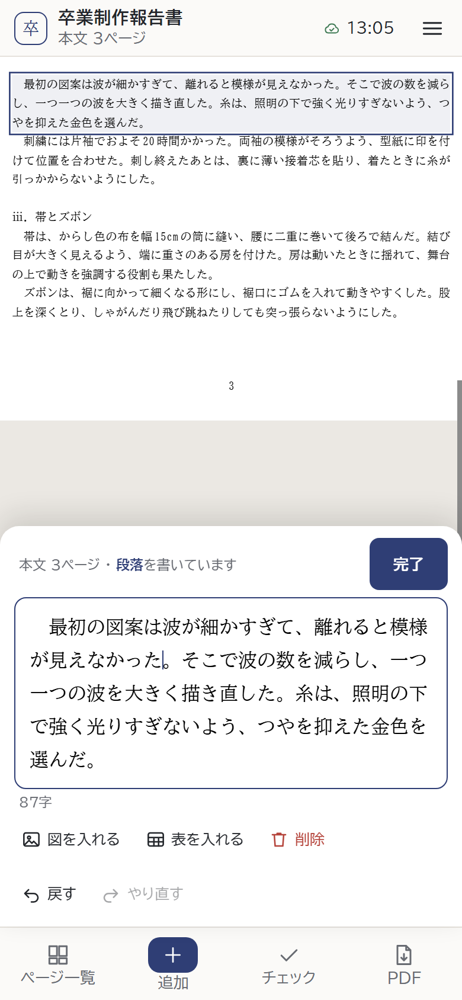
書く欄を開いたとき：上の帯はいまと同じ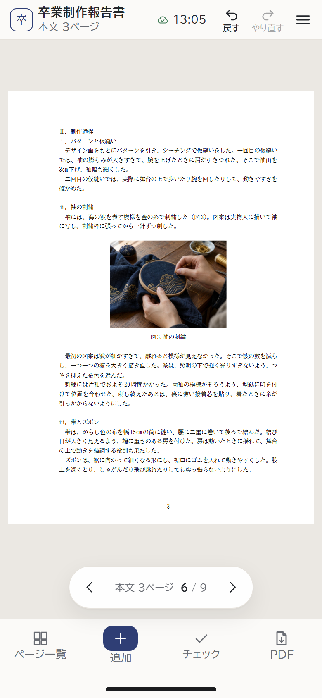
iPhone（下にホームバー）：上なので変わりません 近くで：上の帯
近くで：上の帯帯の部品の間を少しつめました。ふだんの「保存した時刻」は、そのまま入ります。
短くするのは、めったに出ない言葉だけです（下の表）。
上の帯の「保存のようす」の言葉（幅 390px のスマホ）
| どんなとき | いま | 案A |
|---|---|---|
| ふだん（保存したとき） | 時刻 | そのまま |
| 開いた直後・保存中・電波なし・保存エラー | ドライブ・保存中・電波なし・保存エラー | そのまま |
| ドライブに保存できないとき | ドライブ未保存 | 未保存 |
| ドライブへの保存を止めているとき（学科の判断） | 自動保存 時刻 | 時刻だけ（緑の点） |
| 〃 保存している間 | 保存しています… | 保存中 |
| 〃 保存できないとき | 保存できません。バックアップを保存してください（いまも途中で切れる） | 保存エラー |
くわしい言葉は、いまと同じく ≡ のメニューに出ます。「ドライブ未保存」は、ボタンを足すと少し切れるため短くします。
幅の狭いスマホ・横向き
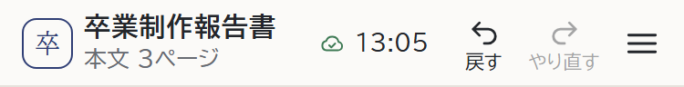
iPhone SE（375px）：ふだん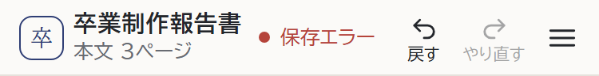
いちばん長い言葉（保存エラー）も入ります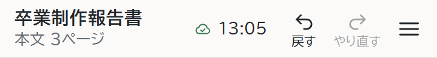
小さい Android（360px）：左の「卒」のマークを出しません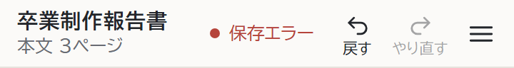
マークをなくすと、保存エラーも入ります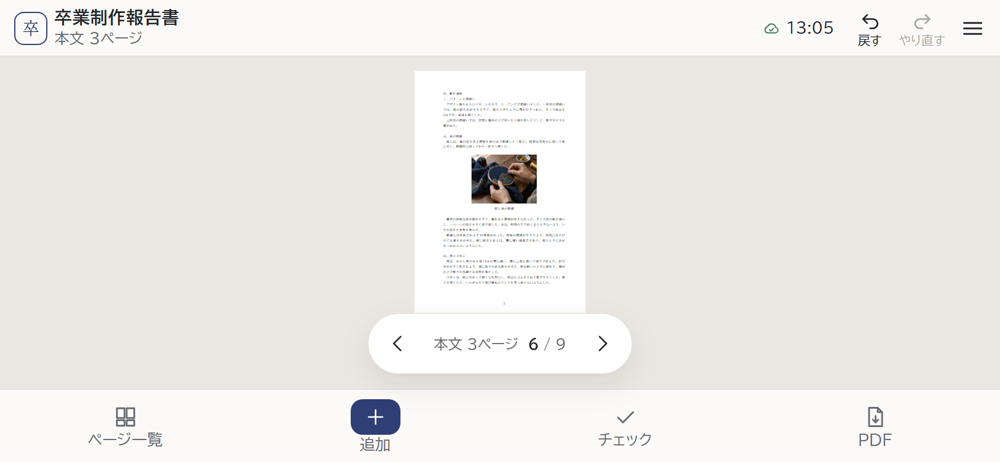
横向き：帯にゆとりがあります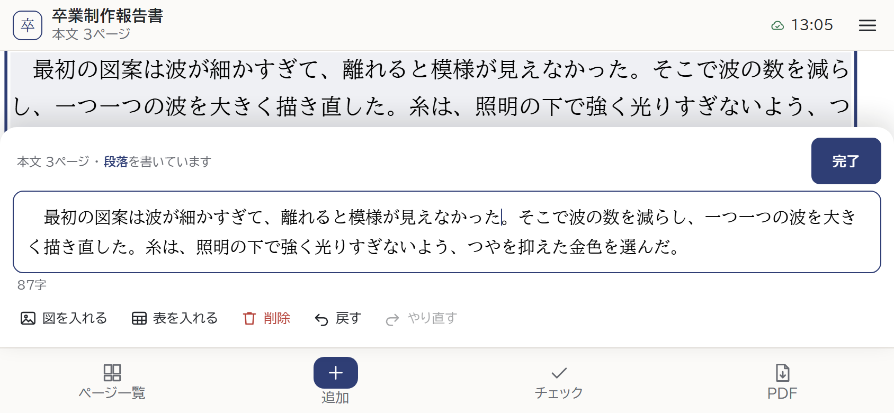
横向きで書く欄を開いたとき：上の帯はいまと同じよいところ
紙面をかくさない。どのページでも同じ所にある。ほかのアプリでもよく見る場所。
紙面をかくさない。どのページでも同じ所にある。ほかのアプリでもよく見る場所。
弱いところ
上の帯がきゅうくつになり、めったに出ない言葉を短くする。片手だと指が届きにくい。
上の帯がきゅうくつになり、めったに出ない言葉を短くする。片手だと指が届きにくい。


気になるところ

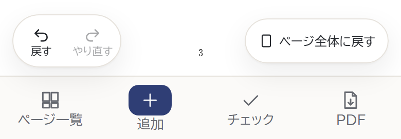
拡大しているとき：ページ送りが消えるので、左下に2つ並べます（右下は「ページ全体に戻す」）。場所が変わります。
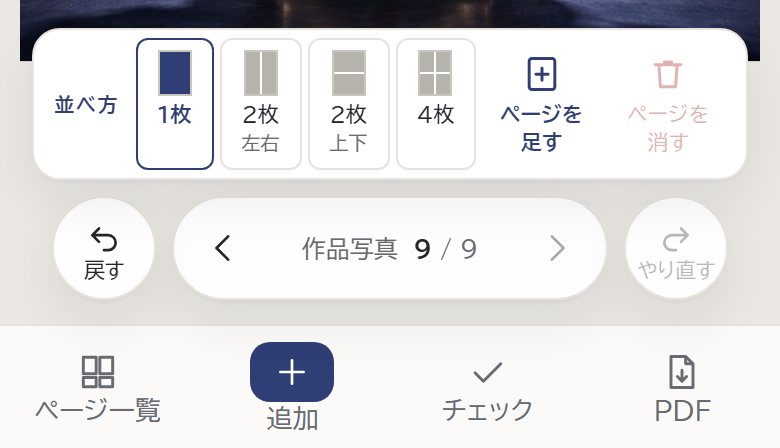
作品写真のページ：並べ方の道具の下に並び、画面の下がこみあいます。よいところ
指が届きやすい。いま見ている紙面のすぐ下にある。
指が届きやすい。いま見ている紙面のすぐ下にある。
弱いところ
「戻す」が「前のページ（‹）」とまぎれやすい。拡大すると場所が変わる。画面の下がこみあう。
「戻す」が「前のページ（‹）」とまぎれやすい。拡大すると場所が変わる。画面の下がこみあう。

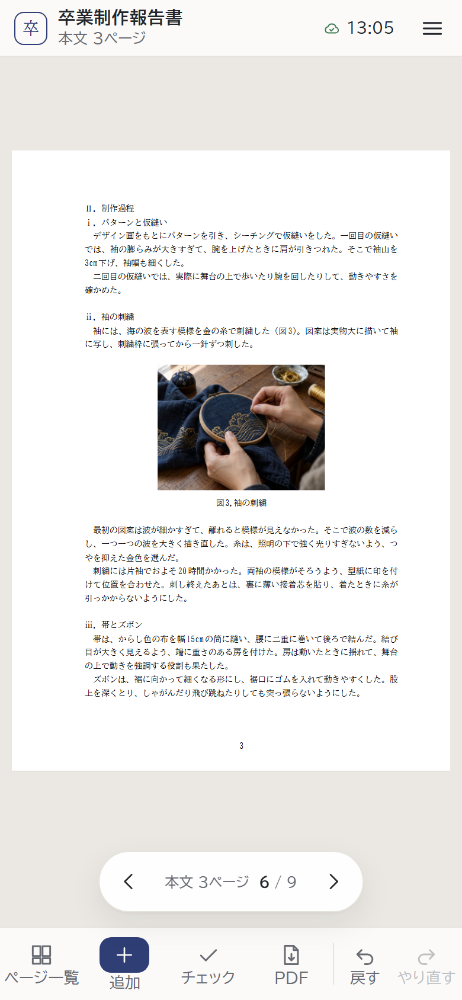
何も選んでいないとき
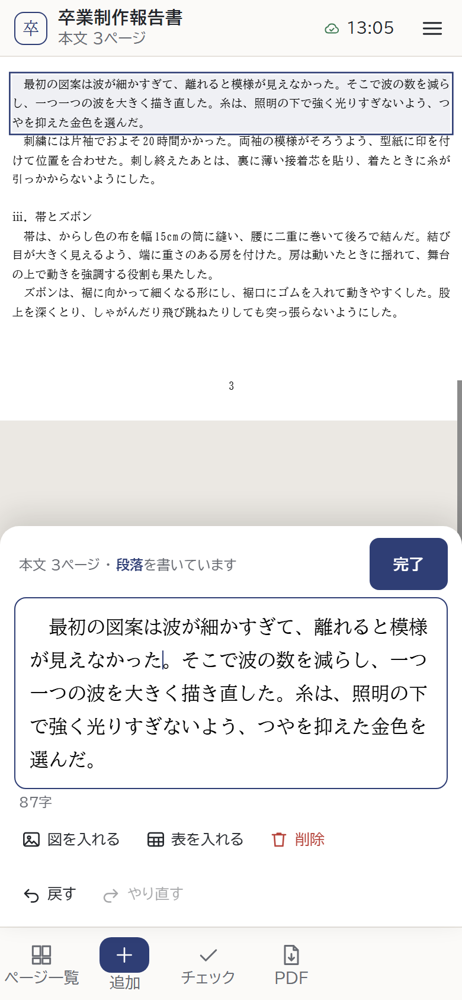
書く欄を開いたとき：隠します（右はしが空く）
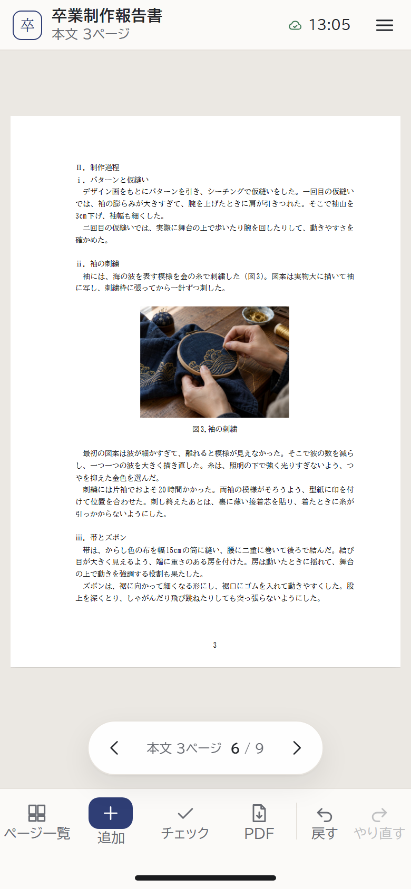
iPhone：ホームバーのすぐ上
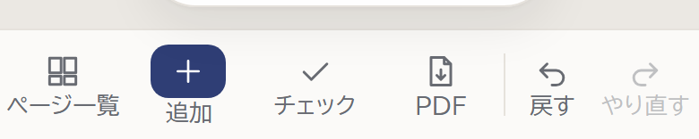
近くで
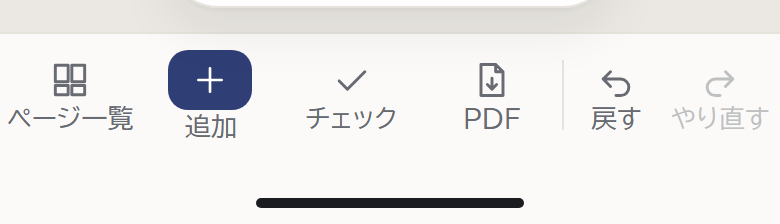
近くで：iPhone「戻す」だけをタブにして、戻したあとに「やり直す」を出す形も考えました。ボタンが出たり消えたりして分かりにくいので、2つとも置いています。
よいところ
いつも同じ所で、指が届きやすい。紙面をかくさない。
いつも同じ所で、指が届きやすい。紙面をかくさない。
弱いところ
タブがきゅうくつ。ほかのタブは欄が開くのに、「戻す」はすぐ戻るので、働きがちがう。書いている間は右はしが空く。
タブがきゅうくつ。ほかのタブは欄が開くのに、「戻す」はすぐ戻るので、働きがちがう。書いている間は右はしが空く。